Explain tensorflow model using Shap and Model Weights on METABRIC data
from platform import python_version
python_version()'3.8.18'import numpy as np
import pandas as pd
import sklearn
import matplotlib.pyplot as plt
from sklearn.model_selection import GridSearchCV
from sklearn.model_selection import train_test_split
from sklearn.preprocessing import MinMaxScaler, LabelEncoder, OneHotEncoder
from sklearn.metrics import confusion_matrix,ConfusionMatrixDisplay
import tensorflow as tf
from tensorflow import keras
from tensorflow.keras.layers import Dense, Dropout
from keras.utils import to_categorical
from tensorflow.keras.callbacks import EarlyStopping
from tensorflow.keras.models import Sequential
from keras import regularizers
from scikeras.wrappers import KerasClassifier
import shap
# Check for TensorFlow GPU access
print(f"TensorFlow has access to the following devices:\n{tf.config.list_physical_devices()}")
# See TensorFlow version
print(f"TensorFlow version: {tf.__version__}")TensorFlow has access to the following devices:
[PhysicalDevice(name='/physical_device:CPU:0', device_type='CPU'), PhysicalDevice(name='/physical_device:GPU:0', device_type='GPU')]
TensorFlow version: 2.13.0tf.test.is_gpu_available()WARNING:tensorflow:From /var/folders/r6/gdf2rxfj40dc6v2l0101z47m0000gn/T/ipykernel_45600/337460670.py:1: is_gpu_available (from tensorflow.python.framework.test_util) is deprecated and will be removed in a future version.
Instructions for updating:
Use `tf.config.list_physical_devices('GPU')` instead.
2024-02-21 17:11:19.711243: I metal_plugin/src/device/metal_device.cc:1154] Metal device set to: Apple M3 Max
2024-02-21 17:11:19.711259: I metal_plugin/src/device/metal_device.cc:296] systemMemory: 128.00 GB
2024-02-21 17:11:19.711264: I metal_plugin/src/device/metal_device.cc:313] maxCacheSize: 48.00 GB
2024-02-21 17:11:19.711291: I tensorflow/core/common_runtime/pluggable_device/pluggable_device_factory.cc:303] Could not identify NUMA node of platform GPU ID 0, defaulting to 0. Your kernel may not have been built with NUMA support.
2024-02-21 17:11:19.711303: I tensorflow/core/common_runtime/pluggable_device/pluggable_device_factory.cc:269] Created TensorFlow device (/device:GPU:0 with 0 MB memory) -> physical PluggableDevice (device: 0, name: METAL, pci bus id: <undefined>)
TrueData loading and preprocessing
Expression data
metabric_X = "https://raw.githubusercontent.com/LamineTourelab/Tutorial/main/Data/metabric_test.csv"
df = pd.read_csv(metabric_X)
df.head(5)| CD52 | DARC | DCN | DB005376 | TAT | GSTM1 | UGT2B11 | AKR7A3 | SERHL2 | ASS1 | ... | MYB | PROM1 | GSTT1 | NELL2 | CST5 | CCL5 | TFF3 | CDH3 | SLC39A6 | SHISA2 | |
|---|---|---|---|---|---|---|---|---|---|---|---|---|---|---|---|---|---|---|---|---|---|
| 0 | 8.240128 | 10.731211 | 11.251592 | 5.350604 | 5.698745 | 5.626606 | 5.845062 | 8.334491 | 7.150713 | 9.887783 | ... | 7.864506 | 10.475799 | 5.236212 | 6.462909 | 5.333817 | 8.771015 | 10.545305 | 8.588759 | 8.287300 | 6.155340 |
| 1 | 7.441887 | 6.498731 | 9.968656 | 5.701508 | 5.416231 | 5.108180 | 5.382890 | 10.277779 | 6.070879 | 6.203103 | ... | 10.699097 | 5.977531 | 8.450049 | 7.486917 | 5.464502 | 8.216436 | 10.422146 | 5.838056 | 10.380559 | 9.409817 |
| 2 | 7.977708 | 6.615727 | 9.632207 | 6.346358 | 5.480066 | 5.356168 | 7.798285 | 9.117568 | 6.230590 | 7.928613 | ... | 9.861437 | 8.517411 | 7.230715 | 11.957439 | 5.359362 | 8.012079 | 12.201802 | 6.681570 | 10.009376 | 9.094121 |
| 3 | 8.045781 | 5.806614 | 8.927632 | 5.628718 | 5.746114 | 5.402901 | 6.043053 | 10.057702 | 11.682904 | 10.047193 | ... | 9.138474 | 9.099391 | 8.072639 | 12.478907 | 5.523048 | 9.245577 | 14.169804 | 6.392376 | 11.141299 | 10.039994 |
| 4 | 9.001653 | 7.928994 | 9.356798 | 5.484226 | 5.152513 | 5.401268 | 8.511554 | 11.127156 | 7.472530 | 7.200276 | ... | 9.591358 | 7.264378 | 8.975517 | 10.044922 | 5.034380 | 10.243518 | 13.568835 | 8.476834 | 8.916101 | 5.929184 |
5 rows × 295 columns
df.info()<class 'pandas.core.frame.DataFrame'>
RangeIndex: 1897 entries, 0 to 1896
Columns: 295 entries, CD52 to SHISA2
dtypes: float64(295)
memory usage: 4.3 MBdf.describe()| CD52 | DARC | DCN | DB005376 | TAT | GSTM1 | UGT2B11 | AKR7A3 | SERHL2 | ASS1 | ... | MYB | PROM1 | GSTT1 | NELL2 | CST5 | CCL5 | TFF3 | CDH3 | SLC39A6 | SHISA2 | |
|---|---|---|---|---|---|---|---|---|---|---|---|---|---|---|---|---|---|---|---|---|---|
| count | 1897.000000 | 1897.000000 | 1897.000000 | 1897.000000 | 1897.000000 | 1897.000000 | 1897.000000 | 1897.000000 | 1897.000000 | 1897.000000 | ... | 1897.000000 | 1897.000000 | 1897.000000 | 1897.000000 | 1897.000000 | 1897.000000 | 1897.000000 | 1897.000000 | 1897.000000 | 1897.000000 |
| mean | 8.522002 | 7.439279 | 8.592254 | 6.084079 | 6.267616 | 6.477882 | 6.920908 | 9.397352 | 7.558455 | 8.298495 | ... | 9.743111 | 8.041666 | 8.295523 | 7.466347 | 6.033271 | 9.845330 | 11.742209 | 7.465389 | 9.204424 | 7.725656 |
| std | 1.349624 | 1.323882 | 1.366120 | 1.489150 | 1.623607 | 1.490238 | 2.132190 | 1.280389 | 1.724598 | 1.314099 | ... | 1.242550 | 1.996117 | 1.691650 | 1.532031 | 1.500256 | 1.357065 | 2.444823 | 1.274105 | 1.620264 | 1.659966 |
| min | 5.018810 | 5.099984 | 5.074217 | 4.922326 | 4.925973 | 4.939510 | 4.988302 | 6.888636 | 5.214098 | 5.001618 | ... | 5.565536 | 5.047322 | 4.854543 | 5.030010 | 4.965204 | 5.685101 | 5.154748 | 5.103031 | 5.510203 | 5.119337 |
| 25% | 7.526147 | 6.337077 | 7.585572 | 5.315275 | 5.400663 | 5.428807 | 5.547688 | 8.359180 | 6.265815 | 7.277712 | ... | 9.072006 | 6.297426 | 7.469392 | 6.264153 | 5.337878 | 8.875585 | 10.657896 | 6.461509 | 7.869267 | 6.363869 |
| 50% | 8.448275 | 7.331663 | 8.608817 | 5.461374 | 5.563156 | 5.624529 | 5.881415 | 9.331409 | 7.083379 | 8.280220 | ... | 10.023695 | 7.623121 | 8.889979 | 7.056264 | 5.484401 | 9.857851 | 12.473404 | 7.303850 | 9.201048 | 7.358426 |
| 75% | 9.428863 | 8.370030 | 9.566763 | 5.971988 | 6.175448 | 7.490048 | 7.556015 | 10.241203 | 8.371308 | 9.256413 | ... | 10.654395 | 9.607842 | 9.489065 | 8.371956 | 5.818663 | 10.791775 | 13.588736 | 8.255375 | 10.508201 | 8.869039 |
| max | 13.374739 | 11.619202 | 12.478475 | 13.010996 | 13.166804 | 12.070735 | 14.145451 | 13.512971 | 13.731721 | 12.182876 | ... | 12.091906 | 13.569006 | 12.784519 | 13.110442 | 13.922840 | 14.004198 | 14.808641 | 12.003642 | 13.440167 | 12.874823 |
8 rows × 295 columns
Label data
metabric_y = "https://raw.githubusercontent.com/LamineTourelab/Tutorial/main/Data/metabric_clin.csv"
metadata = pd.read_csv(metabric_y)
metadata.head(5)| PATIENT_ID | LYMPH_NODES_EXAMINED_POSITIVE | NPI | CELLULARITY | CHEMOTHERAPY | COHORT | ER_IHC | HER2_SNP6 | HORMONE_THERAPY | INFERRED_MENOPAUSAL_STATE | ... | OS_STATUS | CLAUDIN_SUBTYPE | THREEGENE | VITAL_STATUS | LATERALITY | RADIO_THERAPY | HISTOLOGICAL_SUBTYPE | BREAST_SURGERY | RFS_STATUS | RFS_MONTHS | |
|---|---|---|---|---|---|---|---|---|---|---|---|---|---|---|---|---|---|---|---|---|---|
| 0 | MB-0000 | 10.0 | 6.044 | NaN | NO | 1.0 | Positve | NEUTRAL | YES | Post | ... | 0:LIVING | claudin-low | ER-/HER2- | Living | Right | YES | Ductal/NST | MASTECTOMY | 0:Not Recurred | 138.65 |
| 1 | MB-0002 | 0.0 | 4.020 | High | NO | 1.0 | Positve | NEUTRAL | YES | Pre | ... | 0:LIVING | LumA | ER+/HER2- High Prolif | Living | Right | YES | Ductal/NST | BREAST CONSERVING | 0:Not Recurred | 83.52 |
| 2 | MB-0005 | 1.0 | 4.030 | High | YES | 1.0 | Positve | NEUTRAL | YES | Pre | ... | 1:DECEASED | LumB | NaN | Died of Disease | Right | NO | Ductal/NST | MASTECTOMY | 1:Recurred | 151.28 |
| 3 | MB-0006 | 3.0 | 4.050 | Moderate | YES | 1.0 | Positve | NEUTRAL | YES | Pre | ... | 0:LIVING | LumB | NaN | Living | Right | YES | Mixed | MASTECTOMY | 0:Not Recurred | 162.76 |
| 4 | MB-0008 | 8.0 | 6.080 | High | YES | 1.0 | Positve | NEUTRAL | YES | Post | ... | 1:DECEASED | LumB | ER+/HER2- High Prolif | Died of Disease | Right | YES | Mixed | MASTECTOMY | 1:Recurred | 18.55 |
5 rows × 24 columns
metadata.info()<class 'pandas.core.frame.DataFrame'>
RangeIndex: 1897 entries, 0 to 1896
Data columns (total 24 columns):
# Column Non-Null Count Dtype
--- ------ -------------- -----
0 PATIENT_ID 1897 non-null object
1 LYMPH_NODES_EXAMINED_POSITIVE 1897 non-null float64
2 NPI 1897 non-null float64
3 CELLULARITY 1843 non-null object
4 CHEMOTHERAPY 1897 non-null object
5 COHORT 1897 non-null float64
6 ER_IHC 1867 non-null object
7 HER2_SNP6 1897 non-null object
8 HORMONE_THERAPY 1897 non-null object
9 INFERRED_MENOPAUSAL_STATE 1897 non-null object
10 SEX 1897 non-null object
11 INTCLUST 1897 non-null object
12 AGE_AT_DIAGNOSIS 1897 non-null float64
13 OS_MONTHS 1897 non-null float64
14 OS_STATUS 1897 non-null object
15 CLAUDIN_SUBTYPE 1897 non-null object
16 THREEGENE 1694 non-null object
17 VITAL_STATUS 1897 non-null object
18 LATERALITY 1792 non-null object
19 RADIO_THERAPY 1897 non-null object
20 HISTOLOGICAL_SUBTYPE 1882 non-null object
21 BREAST_SURGERY 1875 non-null object
22 RFS_STATUS 1897 non-null object
23 RFS_MONTHS 1897 non-null float64
dtypes: float64(6), object(18)
memory usage: 355.8+ KBmetadata.columnsIndex(['PATIENT_ID', 'LYMPH_NODES_EXAMINED_POSITIVE', 'NPI', 'CELLULARITY',
'CHEMOTHERAPY', 'COHORT', 'ER_IHC', 'HER2_SNP6', 'HORMONE_THERAPY',
'INFERRED_MENOPAUSAL_STATE', 'SEX', 'INTCLUST', 'AGE_AT_DIAGNOSIS',
'OS_MONTHS', 'OS_STATUS', 'CLAUDIN_SUBTYPE', 'THREEGENE',
'VITAL_STATUS', 'LATERALITY', 'RADIO_THERAPY', 'HISTOLOGICAL_SUBTYPE',
'BREAST_SURGERY', 'RFS_STATUS', 'RFS_MONTHS'],
dtype='object')print(f"The total patient ids are {metadata['PATIENT_ID'].count()}, from those the unique ids are {metadata['PATIENT_ID'].value_counts().shape[0]} ")The total patient ids are 1897, from those the unique ids are 1897columns = metadata.keys()
columns = list(columns)
print(columns)['PATIENT_ID', 'LYMPH_NODES_EXAMINED_POSITIVE', 'NPI', 'CELLULARITY', 'CHEMOTHERAPY', 'COHORT', 'ER_IHC', 'HER2_SNP6', 'HORMONE_THERAPY', 'INFERRED_MENOPAUSAL_STATE', 'SEX', 'INTCLUST', 'AGE_AT_DIAGNOSIS', 'OS_MONTHS', 'OS_STATUS', 'CLAUDIN_SUBTYPE', 'THREEGENE', 'VITAL_STATUS', 'LATERALITY', 'RADIO_THERAPY', 'HISTOLOGICAL_SUBTYPE', 'BREAST_SURGERY', 'RFS_STATUS', 'RFS_MONTHS']# Remove unnecesary elements
columns.remove('PATIENT_ID')
# Get the total classes
print(f"There are {len(columns)} columns of labels for these conditions: {columns}")There are 23 columns of labels for these conditions: ['LYMPH_NODES_EXAMINED_POSITIVE', 'NPI', 'CELLULARITY', 'CHEMOTHERAPY', 'COHORT', 'ER_IHC', 'HER2_SNP6', 'HORMONE_THERAPY', 'INFERRED_MENOPAUSAL_STATE', 'SEX', 'INTCLUST', 'AGE_AT_DIAGNOSIS', 'OS_MONTHS', 'OS_STATUS', 'CLAUDIN_SUBTYPE', 'THREEGENE', 'VITAL_STATUS', 'LATERALITY', 'RADIO_THERAPY', 'HISTOLOGICAL_SUBTYPE', 'BREAST_SURGERY', 'RFS_STATUS', 'RFS_MONTHS']metadata['CLAUDIN_SUBTYPE'].unique()array(['claudin-low', 'LumA', 'LumB', 'Her2', 'Normal', 'Basal'],
dtype=object)print(f"The total patient ids are {metadata['PATIENT_ID'].count()}, from those the unique ids CHEMOTHERAPY are {metadata['CHEMOTHERAPY'].value_counts().shape[0]} ")The total patient ids are 1897, from those the unique ids CHEMOTHERAPY are 2print(f'Number of patient CLAUDIN_SUBTYPE as claudin-low :%i' %metadata[metadata['CLAUDIN_SUBTYPE']=='claudin-low'].count()[0])
print(f'Number of patient CLAUDIN_SUBTYPE as LumA :%i' %metadata[metadata['CLAUDIN_SUBTYPE']=='LumA'].count()[0])
print(f'Number of patient CLAUDIN_SUBTYPE as LumB :%i' %metadata[metadata['CLAUDIN_SUBTYPE']=='LumB'].count()[0])
print(f'Number of patient CLAUDIN_SUBTYPE as Her2 :%i' %metadata[metadata['CLAUDIN_SUBTYPE']=='Her2'].count()[0])
print(f'Number of patient CLAUDIN_SUBTYPE as Normal :%i' %metadata[metadata['CLAUDIN_SUBTYPE']=='Normal'].count()[0])
print(f'Number of patient CLAUDIN_SUBTYPE as Basal :%i' %metadata[metadata['CLAUDIN_SUBTYPE']=='Basal'].count()[0])Number of patient CLAUDIN_SUBTYPE as claudin-low :199
Number of patient CLAUDIN_SUBTYPE as LumA :678
Number of patient CLAUDIN_SUBTYPE as LumB :461
Number of patient CLAUDIN_SUBTYPE as Her2 :220
Number of patient CLAUDIN_SUBTYPE as Normal :140
Number of patient CLAUDIN_SUBTYPE as Basal :199plt.figure(figsize=(8,5), dpi=100)
plt.style.use('ggplot')
low = metadata[metadata['CLAUDIN_SUBTYPE']=='claudin-low'].count()[0]
LumA = metadata[metadata['CLAUDIN_SUBTYPE']=='LumA'].count()[0]
LumB = metadata[metadata['CLAUDIN_SUBTYPE']=='LumB'].count()[0]
Her2 = metadata[metadata['CLAUDIN_SUBTYPE']=='Her2'].count()[0]
Normal = metadata[metadata['CLAUDIN_SUBTYPE']=='Normal'].count()[0]
Basal = metadata[metadata['CLAUDIN_SUBTYPE']=='Basal'].count()[0]
Condition = [low, LumA, LumB, Her2, Normal, Basal]
label = ['low', 'LumA', 'LumB', 'Her2', 'Normal', 'Basal']
explode = (0,0,0,0,.2,0)
plt.title('Pourcentage of number of patient per CLAUDIN_SUBTYPE')
plt.pie(Condition, labels=label, explode=explode, pctdistance=0.8,autopct='%.2f %%')
plt.show()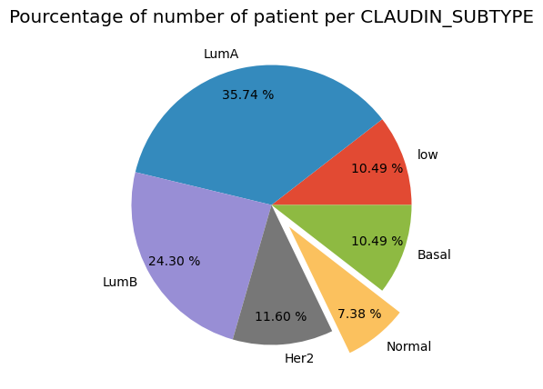
df.index = metadata['PATIENT_ID']Outcome = pd.DataFrame(metadata['CLAUDIN_SUBTYPE'])
Outcome.index = metadata['PATIENT_ID']
Outcome.head()| CLAUDIN_SUBTYPE | |
|---|---|
| PATIENT_ID | |
| MB-0000 | claudin-low |
| MB-0002 | LumA |
| MB-0005 | LumB |
| MB-0006 | LumB |
| MB-0008 | LumB |
# creating instance of labelencoder
labelencoder = LabelEncoder()
Outcome['CLAUDIN_SUBTYPE_enc'] = labelencoder.fit_transform(Outcome['CLAUDIN_SUBTYPE'])
Outcome| CLAUDIN_SUBTYPE | CLAUDIN_SUBTYPE_enc | |
|---|---|---|
| PATIENT_ID | ||
| MB-0000 | claudin-low | 5 |
| MB-0002 | LumA | 2 |
| MB-0005 | LumB | 3 |
| MB-0006 | LumB | 3 |
| MB-0008 | LumB | 3 |
| ... | ... | ... |
| MB-7295 | LumA | 2 |
| MB-7296 | LumB | 3 |
| MB-7297 | LumB | 3 |
| MB-7298 | LumB | 3 |
| MB-7299 | LumB | 3 |
1897 rows × 2 columns
print('Labels counts in Outcome Yes and No respectively:', np.bincount(Outcome['CLAUDIN_SUBTYPE_enc']))Labels counts in Outcome Yes and No respectively: [199 220 678 461 140 199]# creating instance of one-hot-encoder
enc = OneHotEncoder(handle_unknown='ignore')
label = enc.fit_transform(Outcome[['CLAUDIN_SUBTYPE_enc']]).toarray()
labelarray([[0., 0., 0., 0., 0., 1.],
[0., 0., 1., 0., 0., 0.],
[0., 0., 0., 1., 0., 0.],
...,
[0., 0., 0., 1., 0., 0.],
[0., 0., 0., 1., 0., 0.],
[0., 0., 0., 1., 0., 0.]])Data preparation for deep learning model
df = df.astype('float32')
label = label.astype('float32')X_train, X_test, Y_train, Y_test = train_test_split(df, label,
test_size=0.3, random_state=42, shuffle=True)print(f"X_train.shape = {X_train.shape}")
print(f"X_train.dtypes = {X_train.dtypes}")X_train.shape = (1327, 295)
X_train.dtypes = CD52 float32
DARC float32
DCN float32
DB005376 float32
TAT float32
...
CCL5 float32
TFF3 float32
CDH3 float32
SLC39A6 float32
SHISA2 float32
Length: 295, dtype: objectprint(f"X_test.shape = {X_test.shape}")
print(f"X_test.dtypes = {X_test.dtypes}")X_test.shape = (570, 295)
X_test.dtypes = CD52 float32
DARC float32
DCN float32
DB005376 float32
TAT float32
...
CCL5 float32
TFF3 float32
CDH3 float32
SLC39A6 float32
SHISA2 float32
Length: 295, dtype: objectx_train, x_val, y_train, y_val = train_test_split(X_train, Y_train, test_size=0.1,
shuffle=True)scaler = MinMaxScaler()
x_train_scaled = scaler.fit_transform(x_train)
x_val_scaled = scaler.transform(x_val)
x_test_scaled = scaler.transform(X_test)print(f"x_train_scaled.shape = {x_train_scaled.shape}")
print(f"x_val_scaled.shape = {x_val_scaled.shape}")
print(f"x_test_scaled.shape = {x_test_scaled.shape}")x_train_scaled.shape = (1194, 295)
x_val_scaled.shape = (133, 295)
x_test_scaled.shape = (570, 295)Model
EPOCHS = 50
NB_CLASSES = 6
DROPOUT = 0.3# The model hyperparatmeter was defined with gridSearchCV using scikeras.wrappers below.
model = Sequential()
model.add(Dense(64, input_shape=x_train_scaled.shape[1:], activation = 'relu', name='dense_layer'))
model.add(Dense(20, activation = 'relu', name='dense_layer_2',
kernel_regularizer=regularizers.L1(0.01),
activity_regularizer=regularizers.L2(0.01)))
model.add(Dense(20, activation = 'relu', name='dense_layer_3',
kernel_regularizer=regularizers.L1(0.01),
activity_regularizer=regularizers.L2(0.01)))
model.add(Dense(NB_CLASSES, activation= "softmax", name='dense_layer_5')) 2024-02-21 17:11:20.445805: I tensorflow/core/common_runtime/pluggable_device/pluggable_device_factory.cc:303] Could not identify NUMA node of platform GPU ID 0, defaulting to 0. Your kernel may not have been built with NUMA support.
2024-02-21 17:11:20.445822: I tensorflow/core/common_runtime/pluggable_device/pluggable_device_factory.cc:269] Created TensorFlow device (/job:localhost/replica:0/task:0/device:GPU:0 with 0 MB memory) -> physical PluggableDevice (device: 0, name: METAL, pci bus id: <undefined>)model.summary()Model: "sequential"
_________________________________________________________________
Layer (type) Output Shape Param #
=================================================================
dense_layer (Dense) (None, 64) 18944
dense_layer_2 (Dense) (None, 20) 1300
dense_layer_3 (Dense) (None, 20) 420
dense_layer_5 (Dense) (None, 6) 126
=================================================================
Total params: 20790 (81.21 KB)
Trainable params: 20790 (81.21 KB)
Non-trainable params: 0 (0.00 Byte)
_________________________________________________________________keras.utils.plot_model(model, show_shapes=True)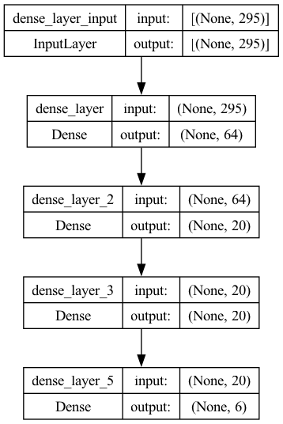
early_stopping = EarlyStopping(
patience = 10, # how many epochs to wait before stopping
restore_best_weights=True,
)model.compile(loss="categorical_crossentropy", optimizer=tf.keras.optimizers.Adam(), metrics=["accuracy"])WARNING:absl:At this time, the v2.11+ optimizer `tf.keras.optimizers.Adam` runs slowly on M1/M2 Macs, please use the legacy Keras optimizer instead, located at `tf.keras.optimizers.legacy.Adam`.
WARNING:absl:There is a known slowdown when using v2.11+ Keras optimizers on M1/M2 Macs. Falling back to the legacy Keras optimizer, i.e., `tf.keras.optimizers.legacy.Adam`.#training the moodel
results = model.fit(x_train_scaled, y_train, epochs=EPOCHS,
verbose=1, callbacks=[early_stopping],
validation_data=(x_val_scaled, y_val))Epoch 1/50
1/38 [..............................] - ETA: 12s - loss: 4.3402 - accuracy: 0.3438
2024-02-21 17:11:20.964171: I tensorflow/core/grappler/optimizers/custom_graph_optimizer_registry.cc:114] Plugin optimizer for device_type GPU is enabled.
38/38 [==============================] - 1s 19ms/step - loss: 4.0637 - accuracy: 0.3392 - val_loss: 3.6642 - val_accuracy: 0.3985
Epoch 2/50
6/38 [===>..........................] - ETA: 0s - loss: 3.5766 - accuracy: 0.4635
2024-02-21 17:11:21.715008: I tensorflow/core/grappler/optimizers/custom_graph_optimizer_registry.cc:114] Plugin optimizer for device_type GPU is enabled.
38/38 [==============================] - 1s 13ms/step - loss: 3.3723 - accuracy: 0.4422 - val_loss: 3.0888 - val_accuracy: 0.4511
Epoch 3/50
38/38 [==============================] - 1s 14ms/step - loss: 2.8880 - accuracy: 0.5427 - val_loss: 2.6729 - val_accuracy: 0.5564
Epoch 4/50
38/38 [==============================] - 1s 14ms/step - loss: 2.4690 - accuracy: 0.6265 - val_loss: 2.3253 - val_accuracy: 0.6241
Epoch 5/50
38/38 [==============================] - 1s 14ms/step - loss: 2.1560 - accuracy: 0.6600 - val_loss: 2.0678 - val_accuracy: 0.5714
Epoch 6/50
38/38 [==============================] - 1s 15ms/step - loss: 1.9155 - accuracy: 0.6692 - val_loss: 1.8646 - val_accuracy: 0.6241
Epoch 7/50
38/38 [==============================] - 1s 14ms/step - loss: 1.7389 - accuracy: 0.7027 - val_loss: 1.7138 - val_accuracy: 0.6466
Epoch 8/50
38/38 [==============================] - 1s 14ms/step - loss: 1.6017 - accuracy: 0.6910 - val_loss: 1.5894 - val_accuracy: 0.6767
Epoch 9/50
38/38 [==============================] - 1s 14ms/step - loss: 1.4974 - accuracy: 0.7211 - val_loss: 1.5148 - val_accuracy: 0.6842
Epoch 10/50
38/38 [==============================] - 1s 14ms/step - loss: 1.4224 - accuracy: 0.7261 - val_loss: 1.4453 - val_accuracy: 0.6767
Epoch 11/50
38/38 [==============================] - 1s 14ms/step - loss: 1.3465 - accuracy: 0.7345 - val_loss: 1.3816 - val_accuracy: 0.6842
Epoch 12/50
38/38 [==============================] - 0s 13ms/step - loss: 1.2895 - accuracy: 0.7580 - val_loss: 1.3473 - val_accuracy: 0.6617
Epoch 13/50
38/38 [==============================] - 1s 14ms/step - loss: 1.2379 - accuracy: 0.7596 - val_loss: 1.2847 - val_accuracy: 0.7143
Epoch 14/50
38/38 [==============================] - 0s 13ms/step - loss: 1.2022 - accuracy: 0.7596 - val_loss: 1.2913 - val_accuracy: 0.6692
Epoch 15/50
38/38 [==============================] - 1s 14ms/step - loss: 1.1726 - accuracy: 0.7521 - val_loss: 1.2295 - val_accuracy: 0.7218
Epoch 16/50
38/38 [==============================] - 1s 14ms/step - loss: 1.1286 - accuracy: 0.7613 - val_loss: 1.1988 - val_accuracy: 0.7068
Epoch 17/50
38/38 [==============================] - 1s 14ms/step - loss: 1.1113 - accuracy: 0.7588 - val_loss: 1.1812 - val_accuracy: 0.6917
Epoch 18/50
38/38 [==============================] - 1s 14ms/step - loss: 1.0758 - accuracy: 0.7663 - val_loss: 1.1469 - val_accuracy: 0.6992
Epoch 19/50
38/38 [==============================] - 0s 13ms/step - loss: 1.0492 - accuracy: 0.7873 - val_loss: 1.1293 - val_accuracy: 0.7068
Epoch 20/50
38/38 [==============================] - 0s 13ms/step - loss: 1.0277 - accuracy: 0.7848 - val_loss: 1.1064 - val_accuracy: 0.6917
Epoch 21/50
38/38 [==============================] - 0s 13ms/step - loss: 1.0167 - accuracy: 0.7831 - val_loss: 1.0811 - val_accuracy: 0.6917
Epoch 22/50
38/38 [==============================] - 0s 13ms/step - loss: 0.9889 - accuracy: 0.8015 - val_loss: 1.1142 - val_accuracy: 0.6692
Epoch 23/50
38/38 [==============================] - 0s 13ms/step - loss: 0.9745 - accuracy: 0.7998 - val_loss: 1.0683 - val_accuracy: 0.7218
Epoch 24/50
38/38 [==============================] - 0s 13ms/step - loss: 0.9553 - accuracy: 0.8132 - val_loss: 1.0923 - val_accuracy: 0.6917
Epoch 25/50
38/38 [==============================] - 0s 13ms/step - loss: 0.9378 - accuracy: 0.8124 - val_loss: 1.0469 - val_accuracy: 0.7218
Epoch 26/50
38/38 [==============================] - 1s 13ms/step - loss: 0.9306 - accuracy: 0.8124 - val_loss: 1.0336 - val_accuracy: 0.7368
Epoch 27/50
38/38 [==============================] - 1s 13ms/step - loss: 0.9184 - accuracy: 0.8141 - val_loss: 1.0128 - val_accuracy: 0.7068
Epoch 28/50
38/38 [==============================] - 0s 13ms/step - loss: 0.9109 - accuracy: 0.8107 - val_loss: 1.0080 - val_accuracy: 0.7519
Epoch 29/50
38/38 [==============================] - 1s 14ms/step - loss: 0.8910 - accuracy: 0.8275 - val_loss: 0.9997 - val_accuracy: 0.7293
Epoch 30/50
38/38 [==============================] - 1s 13ms/step - loss: 0.8925 - accuracy: 0.8124 - val_loss: 0.9851 - val_accuracy: 0.7293
Epoch 31/50
38/38 [==============================] - 0s 13ms/step - loss: 0.8769 - accuracy: 0.8224 - val_loss: 1.0525 - val_accuracy: 0.7143
Epoch 32/50
38/38 [==============================] - 1s 14ms/step - loss: 0.8820 - accuracy: 0.8258 - val_loss: 0.9812 - val_accuracy: 0.7218
Epoch 33/50
38/38 [==============================] - 1s 14ms/step - loss: 0.8591 - accuracy: 0.8208 - val_loss: 1.0319 - val_accuracy: 0.6992
Epoch 34/50
38/38 [==============================] - 0s 13ms/step - loss: 0.8455 - accuracy: 0.8308 - val_loss: 0.9861 - val_accuracy: 0.7218
Epoch 35/50
38/38 [==============================] - 0s 13ms/step - loss: 0.8368 - accuracy: 0.8258 - val_loss: 0.9844 - val_accuracy: 0.7218
Epoch 36/50
38/38 [==============================] - 1s 13ms/step - loss: 0.8361 - accuracy: 0.8333 - val_loss: 0.9746 - val_accuracy: 0.7368
Epoch 37/50
38/38 [==============================] - 0s 13ms/step - loss: 0.8247 - accuracy: 0.8291 - val_loss: 0.9863 - val_accuracy: 0.7293
Epoch 38/50
38/38 [==============================] - 0s 13ms/step - loss: 0.8096 - accuracy: 0.8400 - val_loss: 0.9379 - val_accuracy: 0.7368
Epoch 39/50
38/38 [==============================] - 0s 13ms/step - loss: 0.8000 - accuracy: 0.8409 - val_loss: 0.9429 - val_accuracy: 0.7368
Epoch 40/50
38/38 [==============================] - 0s 13ms/step - loss: 0.8045 - accuracy: 0.8325 - val_loss: 0.9451 - val_accuracy: 0.7293
Epoch 41/50
38/38 [==============================] - 0s 13ms/step - loss: 0.8011 - accuracy: 0.8333 - val_loss: 0.9132 - val_accuracy: 0.7368
Epoch 42/50
38/38 [==============================] - 1s 13ms/step - loss: 0.7788 - accuracy: 0.8434 - val_loss: 0.9711 - val_accuracy: 0.7143
Epoch 43/50
38/38 [==============================] - 1s 14ms/step - loss: 0.7803 - accuracy: 0.8358 - val_loss: 0.9256 - val_accuracy: 0.7143
Epoch 44/50
38/38 [==============================] - 1s 14ms/step - loss: 0.7707 - accuracy: 0.8451 - val_loss: 0.9184 - val_accuracy: 0.7368
Epoch 45/50
38/38 [==============================] - 0s 13ms/step - loss: 0.7695 - accuracy: 0.8492 - val_loss: 0.9130 - val_accuracy: 0.7293
Epoch 46/50
38/38 [==============================] - 0s 13ms/step - loss: 0.7517 - accuracy: 0.8492 - val_loss: 0.9265 - val_accuracy: 0.7143
Epoch 47/50
38/38 [==============================] - 0s 13ms/step - loss: 0.7534 - accuracy: 0.8476 - val_loss: 0.9124 - val_accuracy: 0.7368
Epoch 48/50
38/38 [==============================] - 0s 13ms/step - loss: 0.7435 - accuracy: 0.8518 - val_loss: 0.9153 - val_accuracy: 0.7519
Epoch 49/50
38/38 [==============================] - 0s 13ms/step - loss: 0.7493 - accuracy: 0.8518 - val_loss: 0.9291 - val_accuracy: 0.7218
Epoch 50/50
38/38 [==============================] - 0s 13ms/step - loss: 0.7401 - accuracy: 0.8534 - val_loss: 0.9157 - val_accuracy: 0.7218pd.DataFrame(results.history).plot(figsize=(8, 5))
plt.grid(True)
plt.gca().set_ylim(0, 1)
plt.show()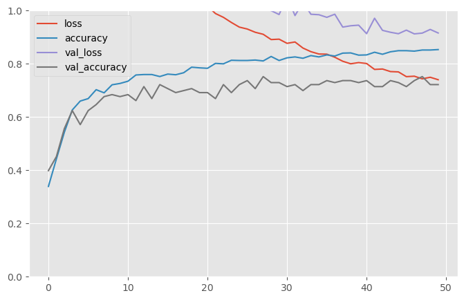
#evalute the model
test_loss, test_acc = model.evaluate(x_test_scaled, Y_test)
print('Test accuracy:', test_acc)18/18 [==============================] - 0s 14ms/step - loss: 0.8909 - accuracy: 0.7509
Test accuracy: 0.7508772015571594# making prediction
predictions = model.predict(X_test)18/18 [==============================] - 0s 2ms/step
2024-02-21 17:11:47.266787: I tensorflow/core/grappler/optimizers/custom_graph_optimizer_registry.cc:114] Plugin optimizer for device_type GPU is enabled.Explainability
Functions
def get_fetaure_importnace(shap_values, features, num=0):
"Features is the X_train.columns names"
vals = np.abs(pd.DataFrame(shap_values[num]).values).mean(0)
shap_importance = pd.DataFrame(list(zip(features, vals)), columns=['col_name', 'feature_importance_vals'])
shap_importance.sort_values(by=['feature_importance_vals'], ascending=False, inplace=True)
shap_importance.loc[shap_importance['feature_importance_vals']>0]
return shap_importancedef plot_importance_features(Features, top=10, title=" "):
" Features is a 2 colunm dataframe with features names and weights"
fig, ax = plt.subplots(figsize =(5, 5))
top_features = Features.iloc[:top]
# Horizontal Bar Plot
ax.barh(top_features['col_name'], top_features['feature_importance_vals'])
ax.set_yticks(top_features['col_name'])
ax.invert_yaxis() # labels read top-to-bottom
ax.set_xlabel('Importance')
ax.set_title(title)
plot = plt.show()
return plotExplain tensorflow keras model with shap DeepExplainer
sample_size=500
if sample_size>len(X_train.values):
sample_size=len(X_train.values)
explainer = shap.DeepExplainer(model, X_train.values[:sample_size], y_train)Your TensorFlow version is newer than 2.4.0 and so graph support has been removed in eager mode and some static graphs may not be supported. See PR #1483 for discussion.# Explain the SHAP values for the whole dataset
# to test the SHAP explainer.
shap_values = explainer.shap_values(X_train.values[:sample_size], ranked_outputs=None)`tf.keras.backend.set_learning_phase` is deprecated and will be removed after 2020-10-11. To update it, simply pass a True/False value to the `training` argument of the `__call__` method of your layer or model.
2024-02-21 17:11:58.986095: I tensorflow/core/grappler/optimizers/custom_graph_optimizer_registry.cc:114] Plugin optimizer for device_type GPU is enabled.
2024-02-21 17:12:01.641162: I tensorflow/core/grappler/optimizers/custom_graph_optimizer_registry.cc:114] Plugin optimizer for device_type GPU is enabled.
2024-02-21 17:12:04.310526: I tensorflow/core/grappler/optimizers/custom_graph_optimizer_registry.cc:114] Plugin optimizer for device_type GPU is enabled.
2024-02-21 17:12:06.979227: I tensorflow/core/grappler/optimizers/custom_graph_optimizer_registry.cc:114] Plugin optimizer for device_type GPU is enabled.
2024-02-21 17:12:09.625874: I tensorflow/core/grappler/optimizers/custom_graph_optimizer_registry.cc:114] Plugin optimizer for device_type GPU is enabled.
2024-02-21 17:12:12.340978: I tensorflow/core/grappler/optimizers/custom_graph_optimizer_registry.cc:114] Plugin optimizer for device_type GPU is enabled.print(" The shap values length is egal to the number of the model's output:", len(shap_values)) The shap values length is egal to the number of the model's output: 6# #shap_values
# shap.initjs()
# shap.force_plot(explainer.expected_value[0].numpy(), shap_values[0], X_train, link="logit")We can select shap importance features for each class
shap_importance_class0 = get_fetaure_importnace(shap_values, num=0, features=X_train.columns)
shap_importance_class1 = get_fetaure_importnace(shap_values, num=1, features=X_train.columns)
shap_importance_class2 = get_fetaure_importnace(shap_values, num=2, features=X_train.columns)
shap_importance_class3 = get_fetaure_importnace(shap_values, num=3, features=X_train.columns)
shap_importance_class4 = get_fetaure_importnace(shap_values, num=4, features=X_train.columns)
shap_importance_class5 = get_fetaure_importnace(shap_values, num=5, features=X_train.columns)# important = [shap_importance_class0, shap_importance_class1,
# shap_importance_class2, shap_importance_class3,
# shap_importance_class4, shap_importance_class5]
# for classs in important:
# plot_importance_features(Features=classs, top=10, title='shap importance features for each class')plot_importance_features(Features=shap_importance_class0, top=10, title='shap importance features for class 0')
plot_importance_features(Features=shap_importance_class1, top=10, title='shap importance features for class 1')
plot_importance_features(Features=shap_importance_class2, top=10, title='shap importance features for class 2')
plot_importance_features(Features=shap_importance_class3, top=10, title='shap importance features for class 3')
plot_importance_features(Features=shap_importance_class4, top=10, title='shap importance features for class 4')
plot_importance_features(Features=shap_importance_class5, top=10, title='shap importance features for class 5')
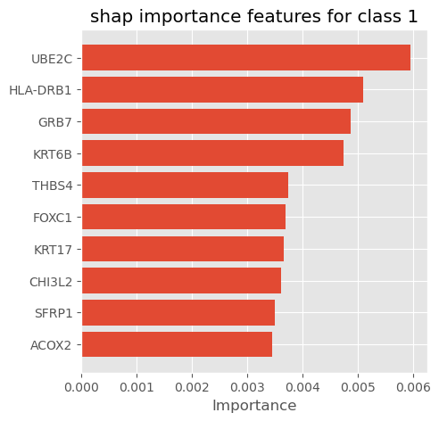
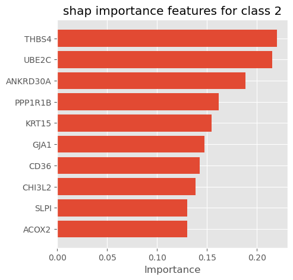
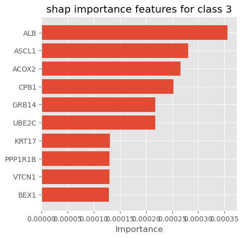
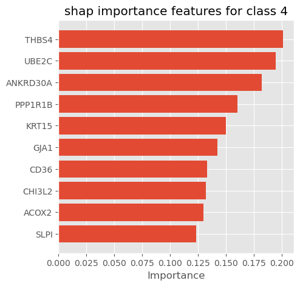
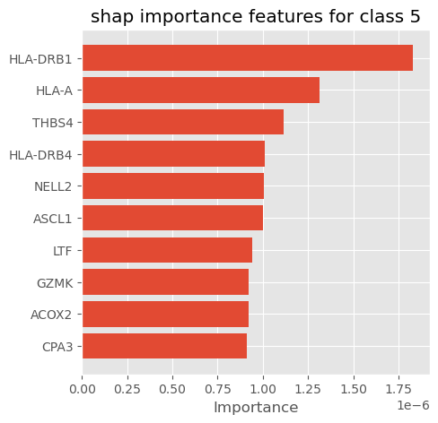
# visualize the first prediction's explanation (use matplotlib=True to avoid Javascript)
shap.summary_plot(shap_values, X_test, plot_type="bar", max_display=10)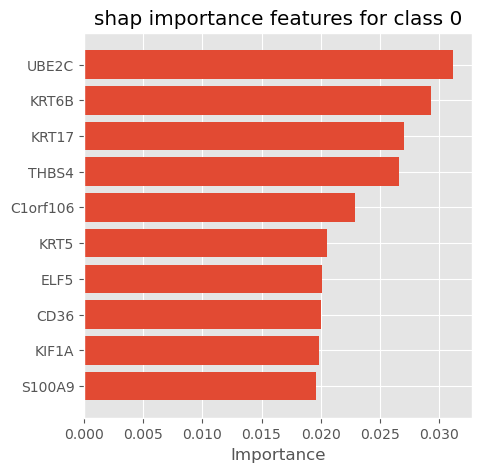
shap.summary_plot(shap_values[0], features=X_train.values[:sample_size], feature_names=X_train.columns, show=False, plot_type="dot", max_display=10)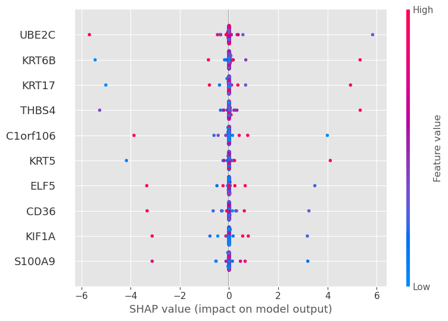
Explain tensorflow keras model with weights
def get_weights_importnace(model, features, num=0):
"Features is the X_train.columns names"
vals_weights = np.abs(model.layers[num].get_weights()[num].T).mean(0)
weights_importance = pd.DataFrame(list(zip(features, vals_weights)), columns=['col_name', 'feature_importance_vals'])
weights_importance.sort_values(by=['feature_importance_vals'], ascending=False, inplace=True)
weights_importance.loc[weights_importance['feature_importance_vals']>0]
return weights_importanceweights_importance = get_weights_importnace(model, features= X_train.columns, num=0)
weights_importance| col_name | feature_importance_vals | |
|---|---|---|
| 167 | UBE2C | 0.163892 |
| 188 | FOXC1 | 0.127354 |
| 214 | GRB7 | 0.126985 |
| 31 | CHI3L2 | 0.123643 |
| 181 | ASCL1 | 0.123099 |
| ... | ... | ... |
| 281 | AZGP1 | 0.059147 |
| 14 | CA12 | 0.058827 |
| 15 | GRP | 0.058796 |
| 244 | THRSP | 0.058051 |
| 243 | IGKC | 0.057974 |
295 rows × 2 columns
plot_importance_features(Features=weights_importance, top=10, title="Weights importance features")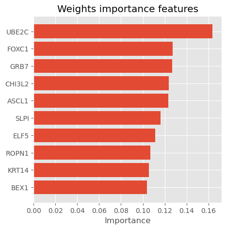
Hyperparameter tunning with GridSearchCV using scikeras.wrappers
def get_model(nb_hidden, nb_neurons):
print(f"## {nb_hidden}-{nb_neurons} ##")
model = keras.models.Sequential()
model.add(Dense(64, input_shape=x_train_scaled.shape[1:], activation = 'relu', name='dense_layer'))
model.add(keras.layers.Dense(2 * nb_neurons, activation="relu",
kernel_regularizer=regularizers.L1(0.01),
activity_regularizer=regularizers.L2(0.01)))
if nb_hidden > 1 :
for layer in range(2, nb_hidden):
model.add(keras.layers.Dense(nb_neurons, activation="relu",
kernel_regularizer=regularizers.L1(0.01),
activity_regularizer=regularizers.L2(0.01)))
model.add(keras.layers.Dense(6, activation="softmax" ))
model.compile(loss="categorical_crossentropy", optimizer=tf.keras.optimizers.Adam(), metrics=["accuracy"])
return model
keras_classifier = KerasClassifier(get_model, nb_hidden=1, nb_neurons=1)
param_distribs = {
"nb_hidden": [1,2,3,6,8],
"nb_neurons": [3,5,8,10],
}
early_stopping = keras.callbacks.EarlyStopping(patience=10, restore_best_weights=True)
search_cv = GridSearchCV(keras_classifier, param_distribs, cv=2 )
search_cv.fit(x_train_scaled, y_train, epochs=20, callbacks=[early_stopping], validation_data=[x_val_scaled, y_val], )
print(f"search_cv.best_params_ = {search_cv.best_params_}")
print(f"search_cv.best_score_ = {search_cv.best_score_}") print(f"search_cv.best_params_ = {search_cv.best_params_}")
print(f"search_cv.best_score_ = {search_cv.best_score_}") search_cv.best_params_ = {'nb_hidden': 2, 'nb_neurons': 10}
search_cv.best_score_ = 0.728643216080402